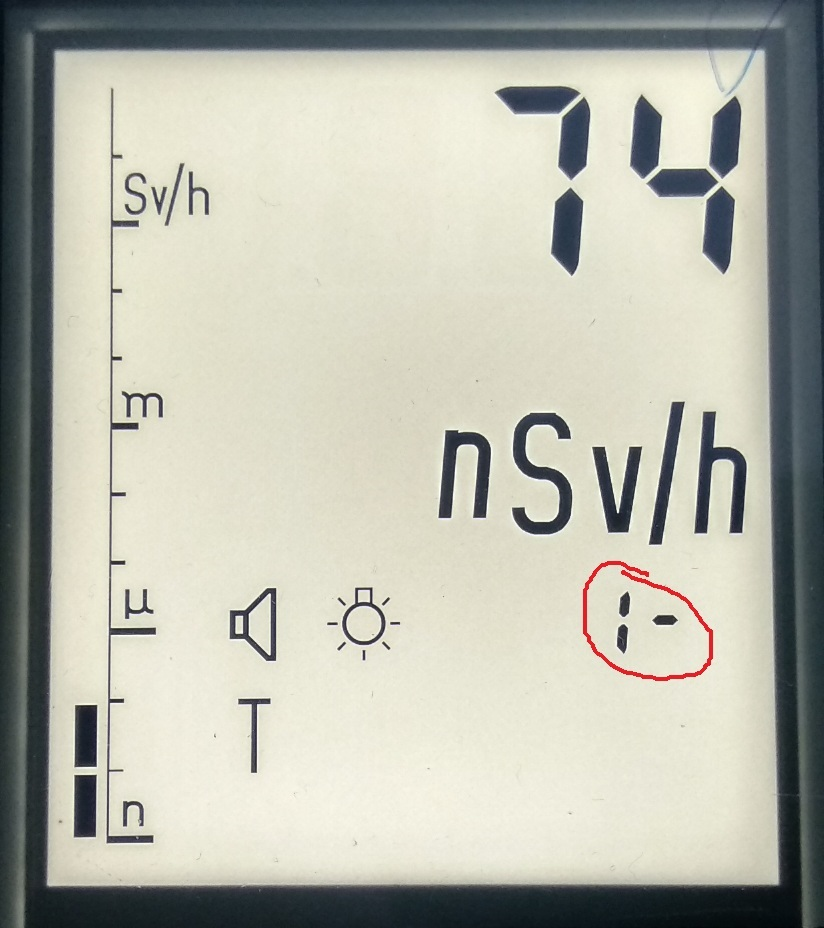

ДКС-АТ1121.
Инструкция по настройке
-
Проконтролировать напряжение и форму пробоя светодиода в 1 и 3 диапазоне.
Для этого:
- Включить прибор, перейти в 3-ий диапазон
Как переключаться в третий диапазон?
- Одновременно нажать △ и
▽
- На экране отобразится номер диапазона

- Кнопками △ и
▽
выбрать необходимый диапазон (1, 2, 3)
- После окончания измерений переключиться обратно в первый диапазон
- Для выхода в нормальный режим дновременно нажать △ и
▽
- С помощью осцилографа проверить сигнал светодиода. Максимум не должен привышать 100В:


- То же сделать для 1-го диапазона
- Значение напряжения диода для 3-го и 1-го диапазона записать в базу настройки
⇗

- С помощью мультиметра проверить напряжение на 1-ом выводе микросхемы D5. Напряжение не
должно
превышать 4.9В.

- То же сделать для 1-го диапазона.
Если напряжение на 1-м выводе превышает 4.9В, следуе заменить резистор R31 на
больший
номинал

- Напряжение на микросхеме для 3-го и 1-го диапазона, номинал резистора R31 записать в базу настройки
⇗